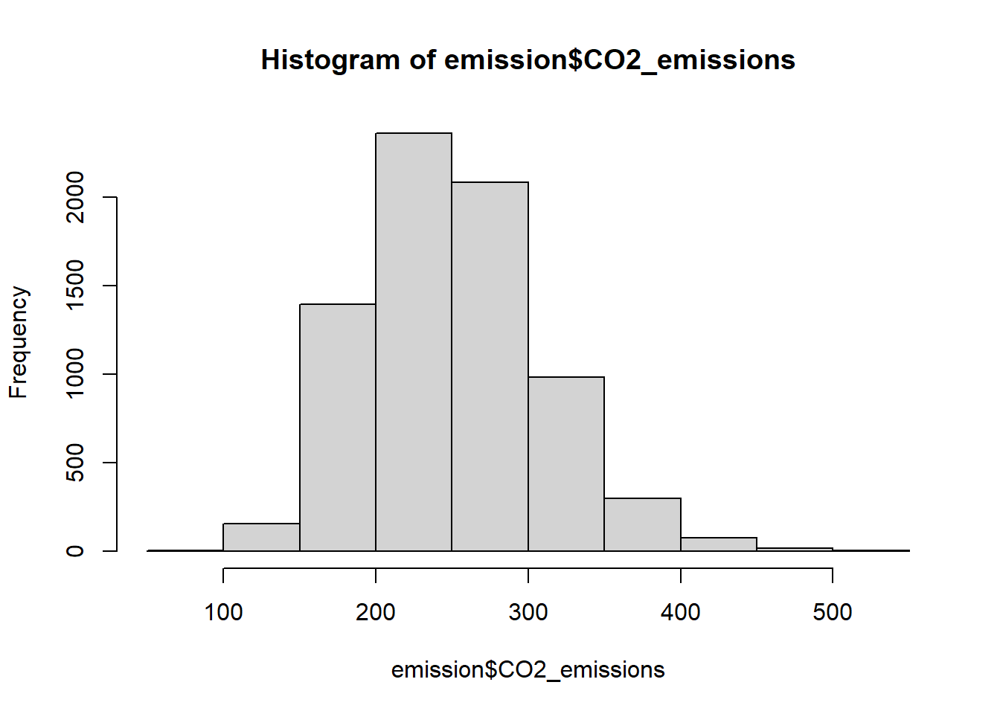

emission <-read.csv("CO2 Emissions_Canada.csv")Rapport_projet
Description du projet
Mon projet est un projet d’apprentissage supervisé, dont le but est de prédire le taux d’émission d’une voiture en fonction de ses caractéristiques.
Le choix d’un projet de machine learning vient du fait que les sciences des données sont un domaine qui m’intéresse particulièrement et dans lequel je n’avais que peu eu l’occasion de réaliser un projet assez poussé. De plus, j’avais déja repéré le jeu de données utilisé, il ne manquait plus que la bonne occasion pour l’exploiter.
J’ai décidé de le réaliser en deux parties : Une première avec R qui a pour but une analyse des données, et une deuxième avec Julia dont le but est de créer des modèles de classification. J’ai choisi d’utiliser R et RStudio pour analyser les données car ce sont les outils que je trouve les plus pratiques pour ce genre de tâches. Ensuite j’ai décider d’utiliser Julia pour réaliser les modèles car c’est un langage que je ne connaissais pas, et que je souhaitais apprendre et comparer avec Python et R, pour cette partie j’ai utiliser VSCode et jupyter Notebook afin de simplifier et clarifier mon code.
Description du jeu de données
Le jeu de données “CO2 Emission by Vehicles” est issus du site Kaggle, c’est une version compilé des données provenant du site officiel de données ouvertes du gouvernement Canadien. Il représente 7385 ainsi que leurs caractéristiques et leur taux d’émission de CO2.
J’ai choisi de travailler à partir de ce jeu de données tout d’abord car les émissions de gaz à effet de serre est un sujet qui m’intéresse. Puis, il contient des données diverses : qualitatives, quantitatives discrètes et quantitatives continues, qui seront à traiter différemment, ce qui rend le travail plus intéressant. Enfin, le jeu de données ne contient pas de valeurs manquantes, ce qui facilitera son traitement et permet une meilleure qualité des modèles.
Partie R
Pour cette partie, j’ai tout d’abord créer un package R : “Package_R”, mais en suite j’ai utilisé R en tant qu’utilisateur plutôt que programmeur, étant donné étant donné qu’il existe déja beaucoup de fonction permettant l’analyse statistique. J’ai seulement créé une fonction permettant de changé le nom des carburants afin de les rendre compréhensible s:
carburant <-function(carb){
if(carb == "X") return("Essence classique")
if(carb == "Z") return("Essence premium")
if(carb == "D") return("Diesel")
if(carb == "E") return("Ethanol")
else return("Gaz naturel")
}
for(i in 1:7385){
emission$Fuel.Type[i] <- carburant(emission$Fuel.Type[i])
}Puis j’ai créé une application Shiny afin de permettre une visualisation aisée des données, chose que je n’avais jamais fait au paravant.
Analyse statistiques
J’ai tout d’abord rendu les données exploitable en renommant les variables, en transformant les variables continues en double, les variables discrètes en integer, et en rendant factorielles les variables qualitatives.
Analyse univariée :
- Plot et table pour comprendre la distribution des variables
names(emission)[names(emission)=="CO2.Emissions.g.km."]<-"CO2_emissions"
emission$CO2_emissions<-as.double(emission$CO2_emissions)
hist(emission$CO2_emissions)
- Test loi : Info sur la normalité malheuresement pas de tests de shapiro.wilk car échantillon trop grand.
Analyse mulitvariée :
- Plot
- Calcul de corrélation
- Test anova
Par exemple, consommation mixte et émission de CO2 très corrélés, plus groupe conso émission : éthanol vs le reste
Application Shiny
Partie Julia
Machine learning
Les packages utilisés Les modèles utilisés Les fonctions de prédiction marche avec des nulls pour certaines variables tsais Train vs test ### Création de package avec github
Interface_julia.jl ne dépend que de fonctions.jl qui ne dépend d’aucun autre fichier car j’ai exporté les modèles finis et optimisés.
Interface avec Dash.jl
Au début je voulais faire en sorte que le véhicule prédit se voit dans le graphique mais je n’ai pas réussi à faire apparaitre le point.
Problèmes rencontrés :
Importation de package bugger souvent, j’ai du supprimer Julia, défragmenter mon disque dur, tout réinstaller. Plusieurs fois. Super. Top. Belle expérience. Puis JDL2 à décider de ne plus fonctionner, quel enculé, à l’heure actuelle je n’ai pas trouvé la solution.